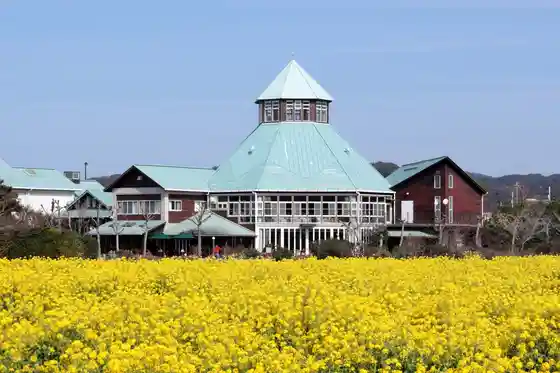
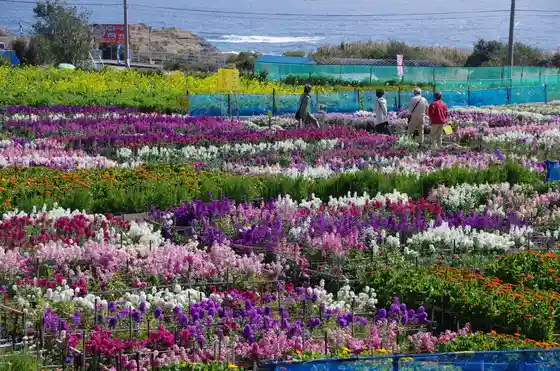
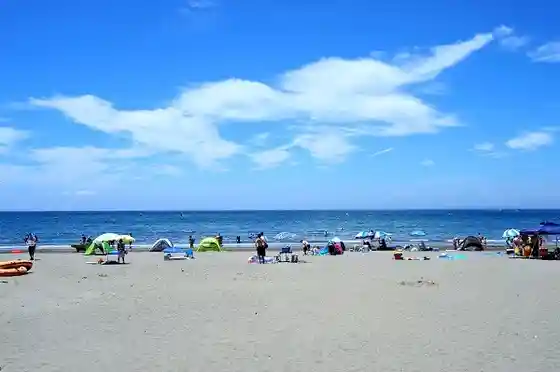
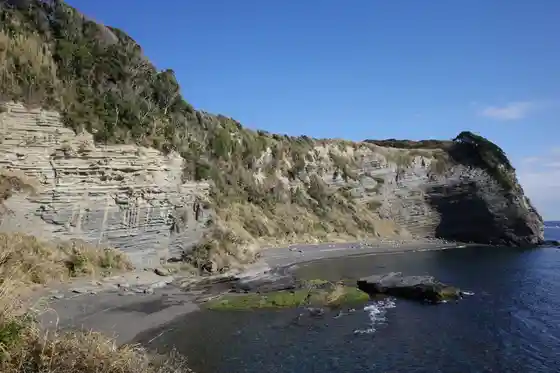

Nojima Saki Lighthouse
Minamiboso, Chiba · 0470-38-3231 · Official / source link
Roadside Station Tomiura Biwa Kurabu
Minamiboso, Chiba · 0470-33-4611 · Official / source link

Shiramazu no O Hanahata
Minamiboso, Chiba · 0470-44-3581 · Official / source link

Iwai Coast
Minamiboso, Chiba · 0470-28-5307 · Official / source link

Ofusa Misaki Nature Park (Bijita Center)
Minamiboso, Chiba · 0470-33-4551 · Official / source link

Roadside Station Shirahama Nojima Saki
Minamiboso, Chiba · 0470-38-5519 · Official / source link
Boso no Eki Tomiura
Minamiboso, Chiba · 0470-20-4401 · Official / source link
Roadside Station Chikura Shiokaze Okoku
Minamiboso, Chiba · 0470-43-1811 · Official / source link
Roadside Station Tomi Raku Sato Tomiyama
Minamiboso, Chiba · 0470-57-2601 · Official / source link
Koke Shrine
Minamiboso, Chiba · 0470-44-5625 · Official / source link
Roadside Station Rozumarii Park
Minamiboso, Chiba · 0470-46-2882 · Official / source link
Roadside Station Wada Ura WA O!
Minamiboso, Chiba · 0470-47-3100 · Official / source link
Roadside Station Miyoshi Village Hi Village
Minamiboso, Chiba · 0470-36-4116 · Official / source link
Kisetsu no Hana (Na no Hana) / Roadside Station Tomiura Biwa Kurabu
Minamiboso, Chiba · 0470-33-4611 · Official / source link
Dan Toku Yama Komatsu Tera
Minamiboso, Chiba · 0470-44-2502 · Official / source link
Chibaken Rakuno no Sato
Minamiboso, Chiba · 0470-46-8181 · Official / source link
Mano Tera
Minamiboso, Chiba · 0470-46-2590 · Official / source link
Tadara Kitahama Beach
Minamiboso, Chiba · 0470-28-5307 · Official / source link
Konpon Beach
Minamiboso, Chiba · 0470-28-5307 · Official / source link
Chikura Orenji Center
Minamiboso, Chiba · 0470-44-0780 · Official / source link
Boso no Kura O Hyakusho Market
Minamiboso, Chiba · 0470-33-4432 · Official / source link
Kisetsu no Hana (Gancho Sakura) / Ho Mizumi Sono
Minamiboso, Chiba · Official / source link
Nambo Chikura Bridge (Park)
Minamiboso, Chiba · 0470-44-3581 · Official / source link
Toyoka Beach
Minamiboso, Chiba · 0470-28-5307 · Official / source link
Wada Ura Coast
Minamiboso, Chiba · 0470-47-3474 · Official / source link
Roadside Station Otsu no Rika Kurabu
Minamiboso, Chiba · 0470-33-4616 · Official / source link
Tadara Kitahama Kaigan Campground
Minamiboso, Chiba · 0470-28-5307 · Official / source link
Nambo Janguru Farm
Minamiboso, Chiba · 0470-29-7817 · Official / source link
Mineokaikiiki Kan
Minamiboso, Chiba · 0470-46-8611 · Official / source link
Shirahama Kosha
Minamiboso, Chiba · 0470-29-5848 · Official / source link
Iwai Beach
Minamiboso, Chiba · 0470-28-5307 · Official / source link
Shirahama Ichigo Kari Center
Minamiboso, Chiba · 0470-38-5145 · Official / source link
Yasuda Farm
Minamiboso, Chiba · 0470-44-0820 · Official / source link
Ichigo LABO
Minamiboso, Chiba · 070-2664-1977 · Official / source link
Ko Minka Rokusuke
Minamiboso, Chiba · 043-227-7103 · Official / source link
Habu Chikura Umibe no Habu Garden
Minamiboso, Chiba · 090-1910-0368 · Official / source link
Nosambutsu Chokubai Tokoro Tsuchi no Megumi Kan
Minamiboso, Chiba · 0470-36-3209 · Official / source link
Ishido Tera
Minamiboso, Chiba · 0470-46-2218 · Official / source link